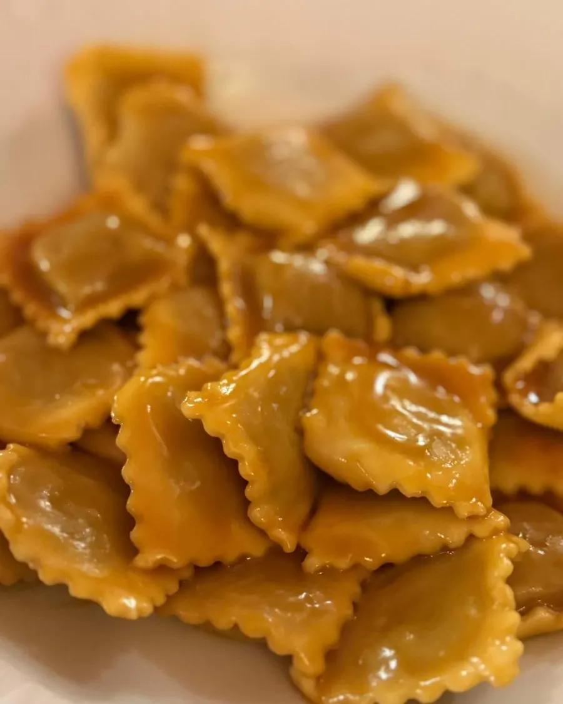
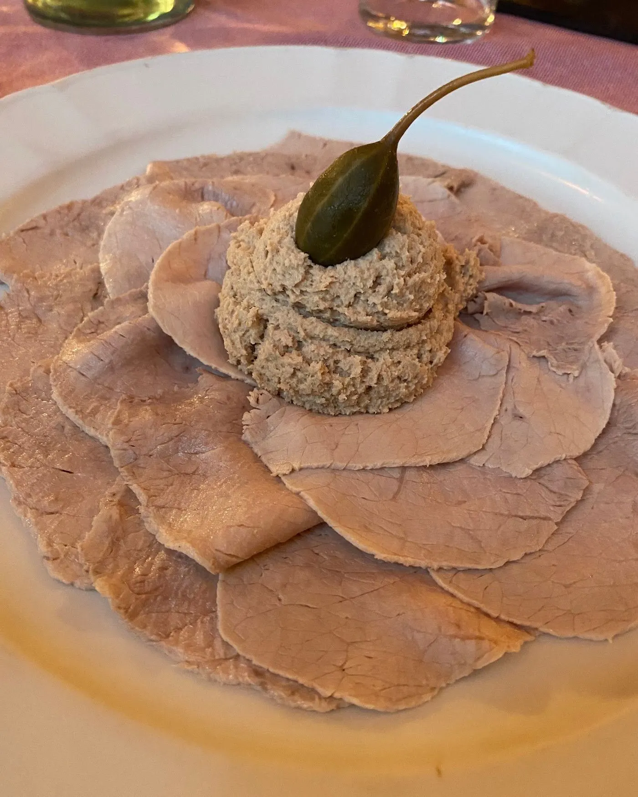
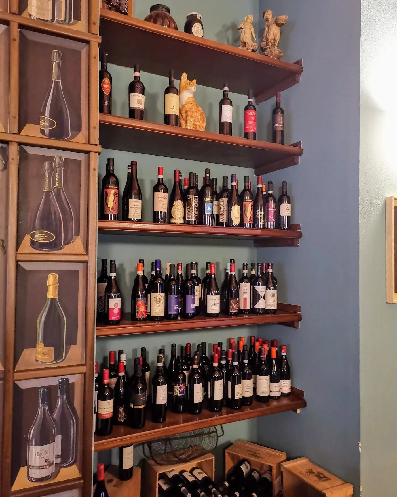
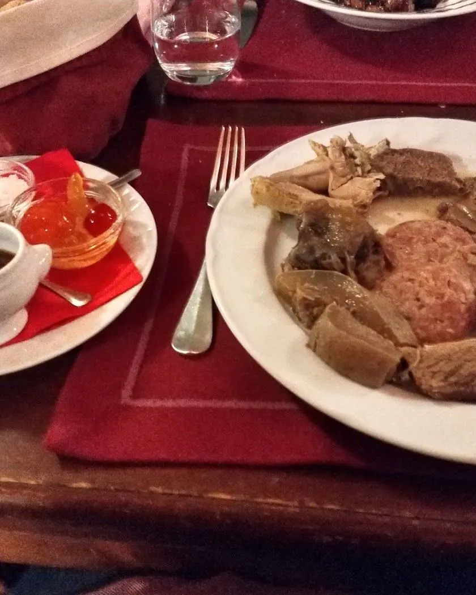
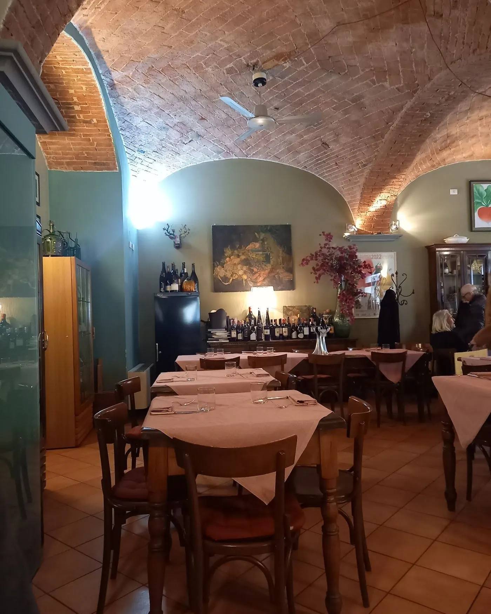

I piatti di qui.
- 01
Ravioli al sugo derthona
Il piatto più chiesto, da sempre
- 02
Vitello tonnato alla piemontese
Come lo si fa qui
- 03
Reginette al rajà
Dalla tradizione di casa
- 04
Stufato al vino rosso
Cottura lunga, e si sente
- 05
Bagna cauda
Quando arriva la stagione





Sono i piatti della tradizione che trovi più spesso. Il menu segue la stagione: per quello di oggi e per allergie o intolleranze chiamaci.
Sulla cucina
Quali sono i piatti tipici?
Ravioli al sugo derthona, reginette al rajà, vitello tonnato alla piemontese, stufato al vino rosso, bagna cauda.
Si può mangiare all’aperto?
Quando la stagione lo consente allestiamo alcuni tavoli nello spazio davanti al locale.